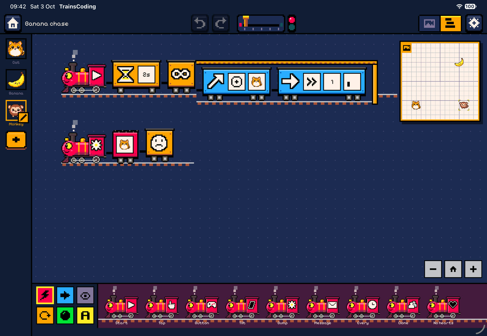
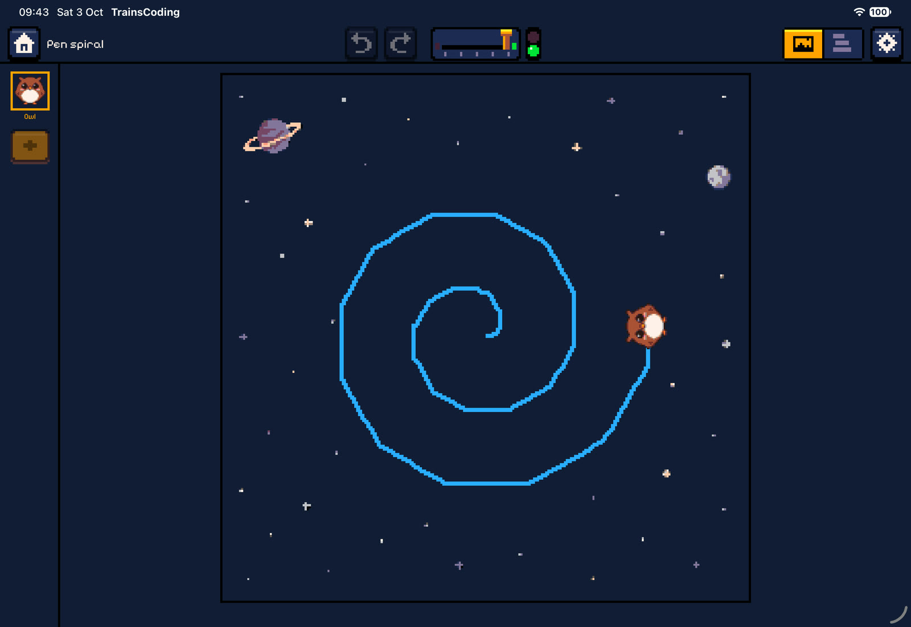
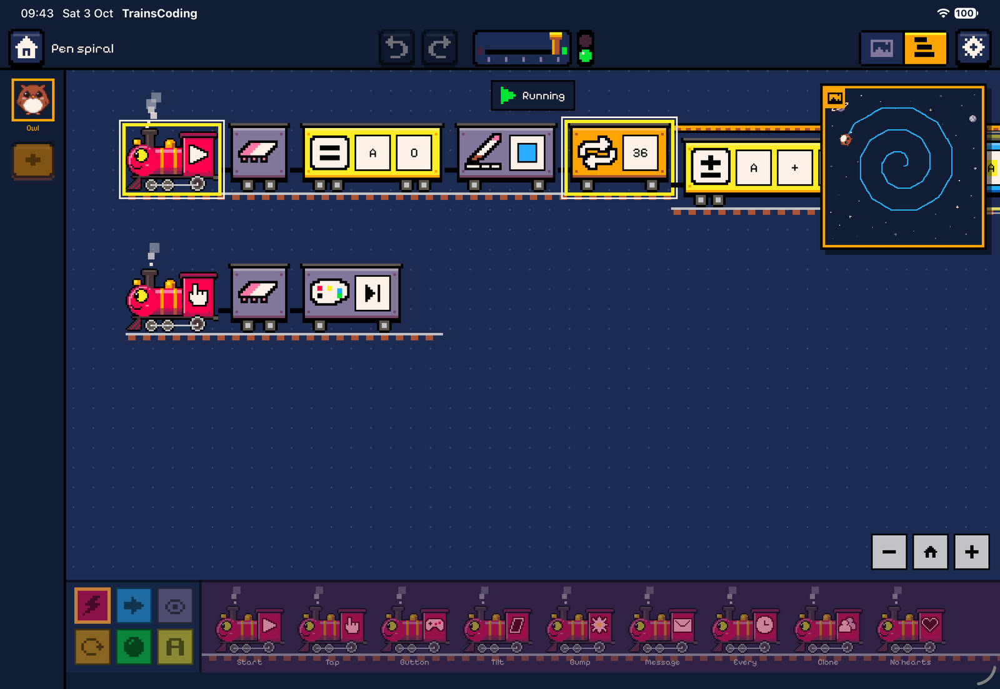

Samples
The sample projects
Four small projects ship with the app. Each one shows a different idea. Open them from the Samples row on the home screen; you always get a fresh copy to play with.
Bouncy ball
Shows: gravity, walls, fixed obstacles and bump events. Stage: Meadow, walls on, gravity on at start.
A light beach ball falls onto the meadow. Every time it lands on the bottom wall it is kicked back up and changes colour. Two fixed bricks stand in its way, and tapping the ball gives it an extra-big kick.


Ball


Things to notice
- The bricks have no trains at all. Their fixed body is enough to make them solid obstacles.
- Because the ball is light, each point of kick strength sends it twice as fast as a normal ball.
- Kicks add to the ball’s current speed, so a tap on the way up sends it higher than a tap while it is falling.
- Try: make the ball heavy in the inspector, or switch the bottom-wall bump to any wall.
Banana chase
Shows: gamepad input, variables and a score, if, win and lose, chasing with point toward. Stage: Grid, walls on, no gravity.
Steer the cat with the arrow keys or the d-pad. Each banana you catch jumps to a random tile and adds a point. Five points wins, but the monkey slowly chases the cat, and if it catches you the game is over.


Cat: four steering trains (one per arrow), a score keeper and a banana catcher


Banana

Monkey




Things to notice
- All three characters are ghosts, so they pass through each other while the bump events still fire.
- One cat bump fires two trains on different characters: the cat scores, and the banana runs away.
- The monkey re-aims before every step. Each Move of 1 tile at slow speed takes half a second, so the cat (fast, 8 tiles/s) can outrun it.
- Holding an arrow does not keep the cat moving. Each press is one step, because When a button is pressed fires once per press.
- Try: make the monkey faster as the score grows, by setting its Move tiles to the variable A.
Pen spiral
Shows: loops, a variable that grows, using a variable as a parameter, and the pen. Stage: Space, walls on, no gravity.
The owl draws a blue spiral. On each of 36 passes it adds 0.1 to A, walks A tiles and turns 30° left. The steps get longer, so the path spirals outwards.

Owl




Things to notice
- The Move wagon’s tiles plate is set to the variable A, not a number. That one change turns a circle into a spiral.
- 12 turns of 30° make a full circle, so 36 passes draw three loops.
- Tapping the owl wipes the drawing and changes its colour. Since the start train is still running, the spiral simply carries on drawing.
- Try: turn 91° instead of 30°, or use Random for the pen colour inside the loop.
Ping-pong
Shows: messages between characters, counting, and if/else. Stage: Dusk, walls on, no gravity.
The pig says “Ping!” and sends a red message. The bear spins round, says “Pong!” and sends a blue message back. The pig counts the rallies, and after five it says “I win!” and the run ends with a win.


Pig


Bear
Things to notice
- The pig’s blue-message train sends the red message from inside itself, and the bear answers with blue. Each message restarts the receiving train, which is exactly what a rally needs.
- The bear starts at 180°, facing the pig. A full 360° spin takes one second and ends facing the same way.
- Both characters are fixed, so nothing pushes them around.
- Try: add a third character that listens to both colours and counts every hit in B.